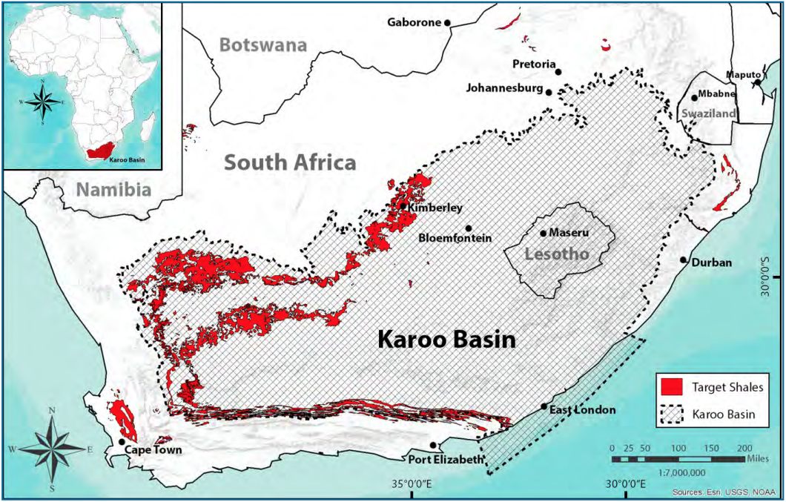

Beneath the semi-desert Karoo lies one of the world's largest untapped shale gas resources. The Permian-aged Whitehill Formation contains an estimated 370 Tcf of gas in place (209 Tcf recoverable) — enough to supply South Africa for over a thousand years at current consumption. But extraction requires hydraulic fracturing in a water-scarce region, igniting one of the most intense environmental debates in the country's history.
The Karoo Basin accumulated sediments for ~100 million years during the Permian–Triassic when South Africa was part of Gondwana. The Whitehill Formation (lower Ecca Group) is the shale gas target — a black, organic-rich shale deposited in a deep, oxygen-starved marine basin. Organic matter (algae, plankton) was buried and converted to hydrocarbons by heat and pressure over millions of years.
The gas is dispersed throughout the rock — an "unconventional" resource requiring hydraulic fracturing because the shale is too impermeable for natural gas flow. The Whitehill is exceptionally rich: average TOC of 4.5% (up to 14%), thermal maturity of Ro 1–4% (in the gas window), high quartz content (~50%), and continuous over 200,000 km² — four times the size of the Marcellus Shale play in the US. But massive Jurassic dolerite intrusions (~180 million years ago) cut through the formation, potentially baking, fracturing, or compartmentalising the reservoir.

A single well uses 10–20 million litres of water. In the semi-arid Karoo (200–400 mm annual rainfall), this is the central environmental concern.
Even a fraction of 209 Tcf commercially produced would transform SA's energy landscape — domestic gas for power, industry, and petrochemicals. But "gas in place" is not the same as "commercially producible gas" — no flow tests have been conducted.
Exploration rights applied for 2008–2010 by Shell, Falcon, Bundu. Key events:
As of mid-2026, not a single commercial shale gas well has been drilled. But the political landscape has shifted decisively. Fracking regulations remain unfinalised; environmental groups have signalled legal challenges are inevitable.
Five work packages collecting baseline data before any commercial drilling can proceed:
Stratigraphic boreholes to core the Whitehill, measure gas content, mineralogy, porosity, permeability.
3D basin modelling integrating all geological, geophysical, and geochemical data.
Pre-drilling baseline of water quality, levels, aquifer characteristics across the Karoo.
Map and assess hundreds of old boreholes — risk of gas/fluid migration through unplugged wellbores.
Baseline seismometer network — Karoo "particularly susceptible" to induced seismicity per ETH Zürich.
Karoo: semi-arid, 200–400 mm rainfall, groundwater-dependent. One well = 10–20 million litres. 1,000 wells = 10–20 billion litres = a small dam. Options:
CSIR 2016 conclusion: Fracking should not proceed in areas of high water stress. The fundamental hydrology question remains unanswered.
2026 marks a decisive shift. But obstacles remain:
Sources: PASA Shale Gas Strategic Project · CSIR SEA for Shale Gas Development (2016) · ASSAf Science Action Plan (2022) · DMRE · US EIA World Shale Gas Resources (2013) · Daily Maverick (July 2026)